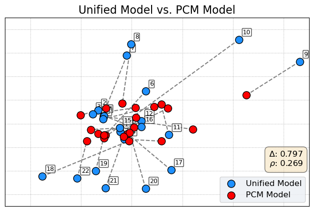
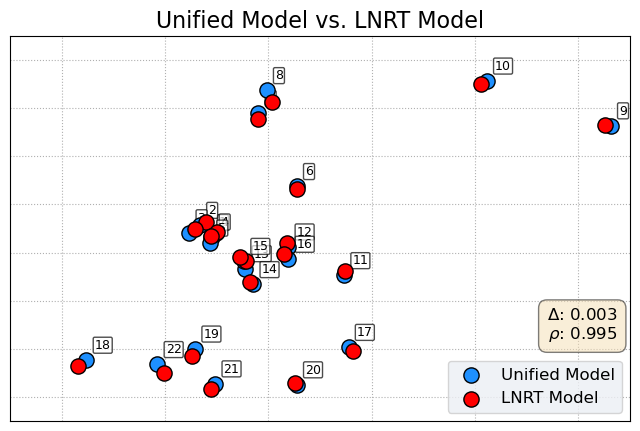
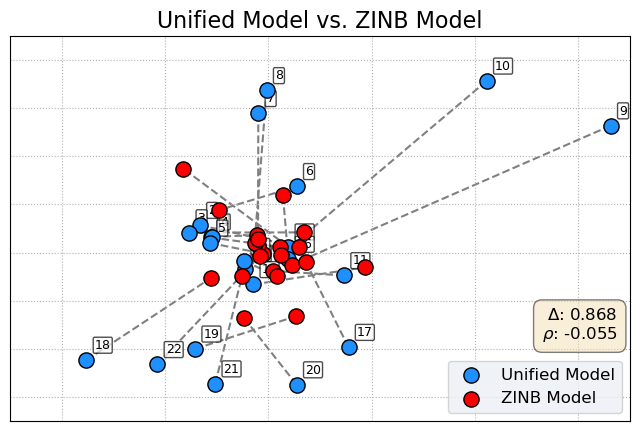
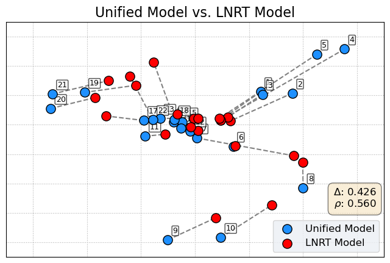
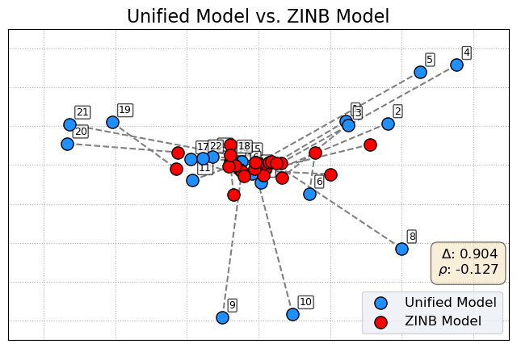

Figures#
[1]:
import pandas as pd
pd.options.display.max_columns = 100
pd.options.display.min_rows = 10
pd.options.display.precision = 3
pd.options.display.float_format = "{:.3f}".format
import numpy as np
np.set_printoptions(precision=3)
np.set_printoptions(suppress=True)
np.set_printoptions(formatter={"float_kind": "{:.3f}".format})
import sys
from pathlib import Path
from typing import Literal
import matplotlib.pyplot as plt
import matplotlib.ticker as mtick
import seaborn as sns
from matplotlib.colors import to_rgba
from scipy.spatial import procrustes
from scipy.spatial.distance import pdist
ROOT_PATH = (
Path("__file__").resolve().parents[1]
) # 0 for .py or unsaved notebooks and 1 for .ipynb
sys.path.append(ROOT_PATH.as_posix())
DATA_PATH = ROOT_PATH / "data"
RESULTS_PATH = ROOT_PATH / "results"
MODEL_PATH = ROOT_PATH / "analysis" / "models"
FIG_PATH = ROOT_PATH / "assets"
[ ]:
df_pcm = pd.read_parquet(RESULTS_PATH / R"pcm_residuals\pcm_residuals.parquet")
df_lnrt = pd.read_parquet(RESULTS_PATH / R"lnrt_residuals\lnrt_residuals.parquet")
df_zinb = pd.read_parquet(RESULTS_PATH / R"zinb_residuals\zinb_residuals.parquet")
pcm_res = df_pcm.filter(regex="residuals").median()
lnrt_res = df_lnrt.filter(regex="residuals").median()
zinb_res = df_zinb.filter(regex="residuals").median()
df = pd.read_parquet(DATA_PATH / "COTS_2025_data.parquet")
df["min_resp_int"] = df.groupby("item_id")["response_selections"].transform("min")
df["process_counts"] = (
df["exhibit_interactions"] + df["response_selections"] - df["min_resp_int"]
)
[ ]:
process_counts = df["process_counts"]
counts = process_counts.value_counts().sort_index()
x = counts.index.values
y = counts.values
# fig, ax = plt.subplots(figsize=(8, 5))
fig, axs = plt.subplots(1, 3, figsize=(20, 5))
# plt.subplots_adjust(wspace=0.1)
ax = axs[0]
markerline, stemlines, baseline = ax.stem(
x,
y,
linefmt="grey",
markerfmt=".k",
basefmt=" ",
bottom=0,
)
# Highlight the zero value stem
if 0 in x:
zero_idx = list(x).index(0)
ax.plot(
x[zero_idx],
y[zero_idx],
marker="o",
markersize=14,
markerfacecolor=to_rgba("red", 0.3),
markeredgecolor=to_rgba("red", 0.9),
markeredgewidth=2,
label="Zero Count",
)
plt.setp(
markerline,
marker="o",
markersize=5,
markerfacecolor=".7",
markeredgecolor="black",
markeredgewidth=1.5,
)
ax.annotate(
"Zero Inflated",
ha="left",
va="top",
fontsize=10,
xy=(0, y[0]),
xycoords="data",
xytext=(10, 8000),
textcoords="data",
arrowprops=dict(
arrowstyle="->",
color="0",
shrinkA=5,
shrinkB=10,
patchA=None,
patchB=None,
connectionstyle="arc3,rad=0.2",
relpos=(0, 0.5),
),
)
ax.yaxis.set_visible(False)
ax.yaxis.set_major_locator(mtick.MaxNLocator(integer=True))
ax.xaxis.set_major_locator(mtick.MaxNLocator(integer=True))
sns.despine(ax=ax, left=True, offset=0, trim=True)
ax.set_title("Process Counts Distribution", fontsize=20)
ax.set_xlabel("Process Counts", fontsize=16)
ax.set_ylabel("Frequency", fontsize=16)
df_res = pd.DataFrame({"lnrt_res": lnrt_res.values, "pcm_res": pcm_res.values})
N_BINS = 15
df_res["rt_bin"] = pd.qcut(
df_res["lnrt_res"], q=N_BINS, labels=False, duplicates="drop"
)
binned_data = (
df_res.groupby("rt_bin").agg({"lnrt_res": "mean", "pcm_res": "mean"}).reset_index()
)
axs[1] = sns.regplot(
x="lnrt_res",
y="pcm_res",
data=binned_data,
ci=None,
scatter_kws={"s": 100, "alpha": 0.8, "edgecolor": "black", "color": "w"},
line_kws={"color": "firebrick", "linewidth": 2},
# lowess=True,
order=2,
ax=axs[1],
)
axs[1].set_ylim(-0.03, 0.03)
axs[1].set_xlim(-1, 1)
axs[1].xaxis.set_major_locator(mtick.MaxNLocator(nbins=7))
axs[1].set_xticks(np.linspace(-1, 1, 5))
sns.despine(ax=axs[1], offset=dict(left=5, bottom=5), trim=True)
axs[1].set_xlabel("LNRT Binned Residuals", fontsize=16)
axs[1].set_ylabel("Average PCM Residuals", fontsize=16)
axs[1].set_title("Response Time and\nAccuracy Residuals", fontsize=20, pad=0)
df_res = pd.DataFrame({"zinb_res": zinb_res.values, "pcm_res": pcm_res.values})
N_BINS = 15
df_res["pcm_bin"] = pd.qcut(
df_res["pcm_res"], q=N_BINS, labels=False, duplicates="drop"
)
binned_data = (
df_res.groupby("pcm_bin").agg({"zinb_res": "mean", "pcm_res": "mean"}).reset_index()
)
axs[2] = sns.regplot(
x="pcm_res",
y="zinb_res",
data=binned_data,
ci=None,
scatter_kws={"s": 100, "alpha": 0.8, "edgecolor": "black", "color": "w"},
line_kws={"color": "firebrick", "linewidth": 2},
# lowess=True,
order=2,
ax=axs[2],
)
axs[2].set_ylim(-0.3, 0.4)
axs[2].set_xlim(-1, 1.5)
sns.despine(ax=axs[2], offset=dict(left=5, bottom=5), trim=False)
axs[2].set_xlabel("PCM Binned Residuals", fontsize=16)
axs[2].set_ylabel("Average ZINB Residuals", fontsize=16)
axs[2].set_title("Process Counts and\nAccuracy Residuals", fontsize=20, pad=0)
fig.align_titles()
plt.savefig(
FIG_PATH / "Descriptive_Motivation.svg", bbox_inches="tight", transparent=False
)
plt.show()
# plt.show()
[2]:
def outlier_mask_by_distance(
arr: np.ndarray, k: float = 3.0, use_median: bool = True
) -> np.ndarray:
"""
Create boolean mask excluding outliers by Euclidean distance.
Parameters
----------
arr : np.ndarray
2D array shape (n_items, n_dims).
k : float, optional
Multiplier for MAD cutoff (default 3.0).
use_median : bool, optional
Use median centroid if True, else mean.
Returns
-------
np.ndarray
Boolean mask (True = keep)
"""
arr = np.asarray(arr, dtype=float)
centroid = np.median(arr, axis=0) if use_median else np.mean(arr, axis=0)
d = np.linalg.norm(arr - centroid, axis=1)
med = np.median(d)
mad = np.median(np.abs(d - med)) or 1.0
thresh = med + k * mad
return d <= thresh
def get_latent_locations(file_path, item_filter=False):
# Validate Drop_Cloze items are filtered for non-process data
idx_exclude = [7, 14]
df = pd.read_parquet(file_path)
zt_1 = df.median().filter(regex=r"zt_centered\[.*1\]$")
zt_2 = df.median().filter(regex=r"zt_centered\[.*2\]$")
z_loc = np.array([i for i in zip(zt_1, zt_2)])
xi_1 = df.median().filter(regex=r"xi\[.*1\]$")
xi_2 = df.median().filter(regex=r"xi\[.*2\]$")
x_loc = np.array([i for i in zip(xi_1, xi_2)])
mask = outlier_mask_by_distance(x_loc, k=3.0)
x_loc = x_loc[mask]
if item_filter:
z_loc = np.delete(z_loc, idx_exclude, axis=0)
return z_loc, x_loc
pcm_z_loc, pcm_x_loc = get_latent_locations(
RESULTS_PATH / R"ls-pcm\ls-pcm_aligned.parquet", item_filter=True
)
lnrt_z_loc, lnrt_x_loc = get_latent_locations(
RESULTS_PATH / R"ls-lnrt\ls-lnrt_aligned.parquet", item_filter=True
)
zinb_z_loc, zinb_x_loc = get_latent_locations(
RESULTS_PATH / R"ls-zinb\ls-zinb_aligned.parquet"
)
unified_z_loc, unified_x_loc = get_latent_locations(
RESULTS_PATH / R"ls-unified_pip\ls-unified_pip_aligned.parquet"
)
unified_sep_z_loc, unified_sep_x_loc = get_latent_locations(
RESULTS_PATH
/ R"ls-unified_separate_gamma_pip\ls-unified_separate_gamma_pip_aligned.parquet"
)
[ ]:
def compare_and_plot_spaces(
separate_coords,
unified_coords,
model_name,
ax,
labels: list[str] | None = None,
label_at: Literal["unified", "separate", "mid"] = "unified",
):
"""
Performs Procrustes alignment, calculates comparison metrics, and generates
a barbell plot comparing a separate latent space to the unified one.
Args:
separate_coords (np.array): Item coordinates from a modality-specific model.
unified_coords (np.array): Item coordinates from the unified model (the target).
model_name (str): The name of the separate model (e.g., "PCM").
ax (matplotlib.axes.Axes): The axis object on which to draw the plot.
"""
mtx1, mtx2_aligned, disparity = procrustes(unified_coords, separate_coords)
dist_unified = pdist(mtx1)
dist_separate_aligned = pdist(mtx2_aligned)
dist_corr = np.corrcoef(dist_unified, dist_separate_aligned)[0, 1]
# Unified model (the target configuration)
ax.scatter(
mtx1[:, 0],
mtx1[:, 1],
c="dodgerblue",
s=120,
label="Unified Model",
zorder=5,
edgecolors="black",
)
# Focal model (after alignment)
ax.scatter(
mtx2_aligned[:, 0],
mtx2_aligned[:, 1],
c="red",
s=120,
label=f"{model_name} Model",
zorder=5,
edgecolors="black",
)
# Draw connectors and place labels using offset in display (points).
n = mtx1.shape[0]
for i in range(n):
x1, y1 = mtx1[i]
x2, y2 = mtx2_aligned[i]
ax.plot([x1, x2], [y1, y2], c="gray", linestyle="--", linewidth=1.5, zorder=0)
lab = labels[i] if labels is not None and i < len(labels) else str(i + 1)
if label_at == "unified":
xy = (x1, y1)
elif label_at == "separate":
xy = (x2, y2)
else: # "mid"
xy = ((x1 + x2) / 2.0, (y1 + y2) / 2.0)
# Use offset in points so position is consistent visually.
ax.annotate(
lab,
xy,
xytext=(6, 6),
textcoords="offset points",
ha="left",
va="bottom",
fontsize=9,
bbox=dict(boxstyle="round,pad=0.12", fc="white", alpha=0.7),
)
# Stats
info_text = f"$\\Delta$: {disparity:.3f}\n$\\rho$: {dist_corr:.3f}"
ax.text(
0.98,
0.2,
info_text,
transform=ax.transAxes,
fontsize=12,
verticalalignment="bottom",
horizontalalignment="right",
bbox=dict(boxstyle="round,pad=0.5", fc="wheat", alpha=0.5),
)
ax.set_title(f"Unified Model vs. {model_name} Model", fontsize=16)
ax.tick_params(
axis="both", which="both", length=0, labelbottom=False, labelleft=False
)
ax.legend(facecolor="#ECEFF4", loc="lower right", fontsize=12)
ax.set_ylim(-0.3, 0.4)
ax.set_xlim(-0.2, 0.4)
combined_loc = np.concatenate([mtx1, mtx2_aligned], axis=0)
x_min, y_min = combined_loc.min(0).round(1) - 0.05
x_max, y_max = combined_loc.max(0).round(1) + 0.05
ax.set_xlim(x_min, x_max)
ax.set_ylim(y_min, y_max)
ax.grid(True, linestyle=":")
[146]:
fig, ax = plt.subplots(figsize=(8, 5))
compare_and_plot_spaces(pcm_z_loc, unified_sep_z_loc, "PCM", ax=ax)
plt.savefig(
FIG_PATH / "pcm_unified_separate.svg", bbox_inches="tight", transparent=False
)
plt.show()
fig, ax = plt.subplots(figsize=(8, 5))
compare_and_plot_spaces(lnrt_z_loc, unified_sep_z_loc, "LNRT", ax=ax)
plt.savefig(
FIG_PATH / "lnrt_unified_separate.svg", bbox_inches="tight", transparent=False
)
plt.show()
fig, ax = plt.subplots(figsize=(8, 5))
compare_and_plot_spaces(zinb_z_loc, unified_sep_z_loc, "ZINB", ax=ax)
plt.savefig(
FIG_PATH / "zinb_unified_separate.svg", bbox_inches="tight", transparent=False
)
plt.show()



[147]:
fig, ax = plt.subplots(figsize=(8, 5))
compare_and_plot_spaces(pcm_z_loc, unified_z_loc, "PCM", ax=ax)
plt.savefig(
FIG_PATH / "pcm_unified_single.svg", bbox_inches="tight", transparent=False
)
plt.show()
fig, ax = plt.subplots(figsize=(8, 5))
compare_and_plot_spaces(lnrt_z_loc, unified_z_loc, "LNRT", ax=ax)
plt.savefig(
FIG_PATH / "lnrt_unified_single.svg", bbox_inches="tight", transparent=False
)
plt.show()
fig, ax = plt.subplots(figsize=(8, 5))
compare_and_plot_spaces(zinb_z_loc, unified_z_loc, "ZINB", ax=ax)
plt.savefig(
FIG_PATH / "zinb_unified_single.svg", bbox_inches="tight", transparent=False
)
plt.show()



[ ]: